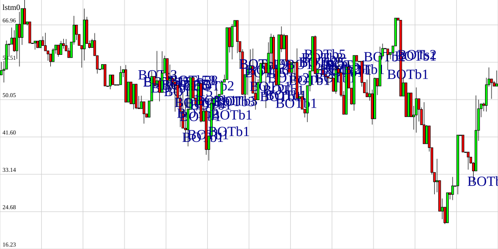

What Stephen is doing now (summer 2025)
I like this now thing. I think I'm going to try and treat it like a personal annual/quarterly report.
Employment
I continue to be employed by the new big tech company I've been working for. Focusing on that last fall slowd down a lot of stuff.
Where
I've managed to buy some land up in the mountains and am no longer living on my boat. I've been building a small house on it myself.
Side projects
My side project velocity is pretty high and accelerating. I haven't finished a serious commercial launch but I've got about half a dozen things right at the finish line
Ticket Tracker
Ticket Tracker has gotten pretty good. I need to write some distro packaging for it and try to get it distributed. I've added back some vibe coding featuers (I wrote some as an experiment back in 2021 and posted on a now offline forum making it one of the very first vibe coding tools.) I've also added some basic promodero tools and given it its own repo and web page (I can't remember if those are live right now or not.)
Robotics
The robotics stuff has really stalled. Training language action models just generates so much heat, I'm thinking about renting a GPU for that since it's close to double what a VPS used to cost now.
Quantitative ML

Surprisingly this takes way less compute and produces less heat than the reobotics stuff has. I've got something pretty interesting that I expect to start entering trades from by the end of this year. Obviously I won't be posting many of the details.
Boat power
I've cannibalized the secondary hotel power system from the boat so I can have air-conditioning on my land. I've come up with a pretty cool micro air-conditioning system for boats that I'm going to test and productize so it's not as necesary as it used to be. I'm pretty happy with how quickly I established a beach head on what's essentially a cliff, I have power, satilite internet, a lot of luxuries etc.
Web extension for blocking addictions
Early this year I wrote a web extension for limiting time on websites. Apparently Apple does this on OSX and iOS out of the box with "screen time" but to my knowladge there isn't anything like it on Windows and Linux. bingblock.com is the domain name for it and you'll be able to install it as soon as Google approves it.
Publishing
I haven't been as good about publishing things as I had hoped. I've started filming a lot and finished a lot of the video compositing/editing tools. Hopefully I'll write more in the future, I have so many half finished drafts that really should be cleaned up and posted.